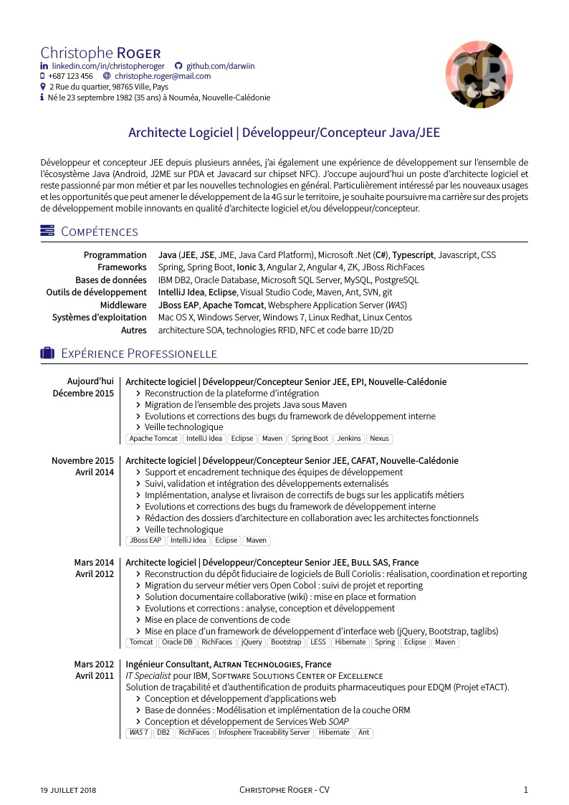
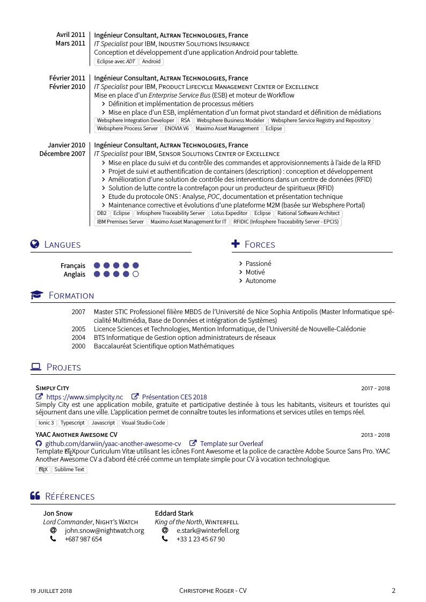
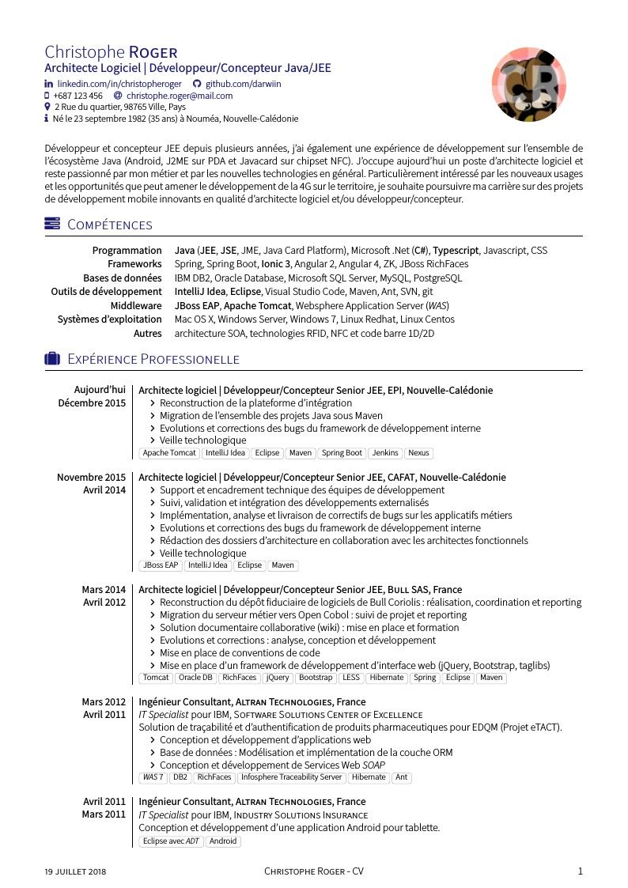
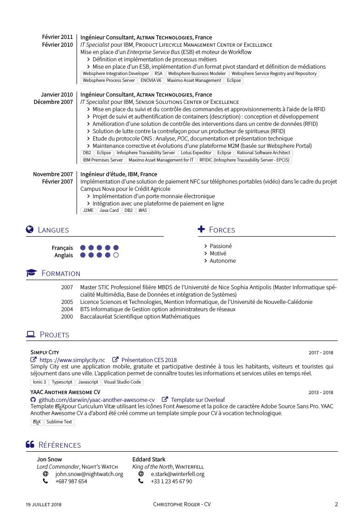

=================
You can edit online YAAC: Another Awesome CV template on Overleaf. Feel free to use my referal link if you want to create your account.
YAAC: Another Awesome CV was first based on a CV template from Alessandro Plasmati. This template used XeLaTeX engine and Fontin Sans font.
Personal data has moved on top of the first page just before the position and Fontin Sans font has been replaced by Source Sans Pro Font from Adobe. Font Awesome icons highlight important elements.
Unlike Alessandro Plasmati CV template, all layout stuff in YAAC: Another Awesome CV has moved in the Latex class file yaac-another-awesome-cv.cls to improve source code readability and style reusability.
More informations about the original Alessandro Plasmati template can be found here :
| Page. 1 | Page. 2 |
|---|---|
|  |  |
| Page. 1 | Page. 2 |
|---|---|
|  |  |
When declaring the \documentclass you can use option(s) to customize your CV rendering.
1. localFont to use the fonts included in the fonts folder
2. alternative to use the alternative header layout
3. 10pt or 11pt or 12pt to change the font size
4. compact to reduce vertical space between you experience entries
```latex % Used with no option, the template will use the 'traditional' % header layout your system fonts and the default color scheme ie. blue \documentclass{yaac-another-awesome-cv}
% Used with localFont option the template will use the 'traditional' % header layout, fonts included in the fonts directory and the default color scheme \documentclass[localFont]{yaac-another-awesome-cv}
% Used with alternative option, the template will use the 'alternative' % header layout, your system fonts and the default color scheme \documentclass[alternative]{yaac-another-awesome-cv}
% Used with localFont, alternative and 10pt options the template will use the 'alternative' % header layout, fonts included in the fonts directory, the default color scheme and the '10pt' font size. % Based on the article document class, size options are 10pt, 11pt and 12pt \documentclass[localFont,alternative,10pt]{yaac-another-awesome-cv}
% Used with 'compact' option the template will use the compact experience layout % Feel free to use this option with the others that are available \documentclass[compact]{yaac-another-awesome-cv}
```
Outside of the \socialinfo wrapper you have to define the mandatory parameters \name and \tagline.
```latex
% Define author's name
% Usage: \name{
% Define author's photo (optional)
% Usage: \photo[
% Define author's tagline
% Usage: \tagline{
Most social network have their command to render a clickable link or a simple text entry.
```latex
% Render author's linked-in (optional)
% Usage: \linkedin{
% Render author's viadeo(optional)
% Usage: \viadeo{
% Render author's github (optional)
% Usage: \github{
% Render author's stackoverflow profile (optional)
% Usage: \stackoverflow{
% Render author's stackexchange profile (optional)
% Usage: \stackexchange{
% Render author's email (optional)
% Usage: \email{
Put these command in the \socialinfo wrapper. Feel free to add \\ when you want to force a new line.
latex
\socialinfo{
\linkedin{christopheroger}
\viadeo{christopheroger}
\github{darwiin}\\
\smartphone{+687 123 456}
\email{christophe.roger@mail.com}\\
\address{2 Rue du quartier, 98765 Ville, Pays}\\
\infos{Né le 23 septembre 1982 (35 ans) à Nouméa, Nouvelle-Calédonie}
}
Use the \makecvheadercommand to generate the header.
latex
\makecvheader
Sections share the left column size (2.5cm by default). You can change this default size using the \setleftcolumnlength command.
`latex
% Override default left column length of (2.5cm) (optional)
% Usage: \setleftcolumnlength{1.5cm} to change the left column lengtyh to 1.5cm
% I recommend to use a size between 1.5cm to 2.5cm
\setleftcolumnlength{1.5cm}
To list your awesome skills as keyword lists you first have to declare the keywords environment and then fill it with a list of keywordsentry
```latex % Begin a new keywords environment to show us your awesome keywords \begin{keywords}
% Here's go your keyword lists group by categories
\keywordsentry{Frameworks}{Spring, Spring Boot, \textbf{Ionic 3}, Angular 2, Angular 4, ZK, JBoss RichFaces}
\end{keywords} ```
To describe your experiences you have first to declare the experiences environment
```latex % Begin a new experiences environment to use experience and consultantexperience macro \begin{experiences}
% Here's go your experiences
\end{experiences} ```
Then you can describe your experiences using \experience and \consultantexperience entries. Each entry must be separated by the \emptyseparator
```latex % Begin a new experiences environment to use experience and consultantexperience macro \begin{experiences}
% The experience entry work as below and can be used to describe a job experience \experience {End date} {Experience title}{Enterprise}{Country} {Begin date} { experience details \begin{itemize} \item Item 1: Item 1 description \item Item 2: Item 2 description \item Item 3: Item 3 description \end{itemize} } {Technology highlights}
% The emptyseparator macro is used to create white space in your experience \emptySeparator
% The consultantexperience macro is very similar to the experience macro, but offer you % the possibility tu put client details \consultantexperience {End date} {Experience title}{Enterprise}{Country} {Begin date} {Client job title}{Clent enterprise} { experience details \begin{itemize} \item Item 1: Item 1 description \item Item 2: Item 2 description \item Item 3: Item 3 description \end{itemize} } {Technology highlights} \end{experiences} ```
The languages section use the skills environment.
```latex % Begin a new skills environment and fill it with skill entries \begin{skills}
% Render a skill in the skills environment
% Usage: \skill{
% End the skills environment
\end{skills}
```
The scolarship section use the scolarship environment.
```latex \begin{scholarship}
% Render a scholarshipentry in the scolarship environment
% Usage: \scholarshipentry{
The projects section use the projects environment.
```latex \begin{projects} \project {Simply City}{2017 - 2018} {\website{https://www.simplycity.nc}{https://www.simplycity.nc} \website{https://innovation.engie.com/fr/news/actus/territoires/simply-city-lappli-qui-simplifie-la-ville-au-ces-2018-avec-engie/8156}{Présentation CES 2018} } {Simply City est une application mobile, gratuite et participative destinée à tous les habitants, visiteurs et touristes qui séjournent dans une ville. L’application permet de connaître toutes les informations et services utiles en temps réel.} {Ionic 3,Typescript,Javascript,Visual Studio Code}
\end{projects} ```
The references section use the references environment.
```latex \begin{references}
% Here's go your references
\end{references} ```
Then you can list your references as follow:
```latex \begin{referees} \referee {John Snow} {Lord Commander of the Night Watch} {Night Watch} {john.snow@nightwatch.org} {+687 987 654}
\referee
{Géry Loutre}
{Architecte logiciel}
{Cafat}
{ref1@cafat.nc}
{+687 987 654}
\begin{referees} ```
Latex class file yaac-another-awesome-cv is published under the term of the LPPL Version 1.3c.
All content files are published under the term of the CC BY-SA 4.0 License.